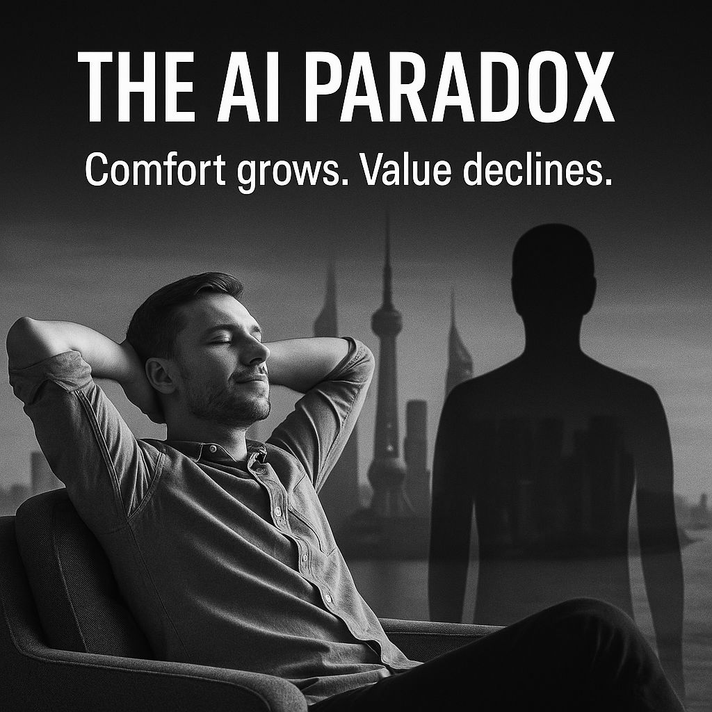

ยิ่ง AI สร้างความสะดวกมากขึ้น มนุษย์ชนชั้นกลางก็ยิ่งเสี่ยงถูกผลักให้ไร้ที่ยืนมากขึ้น
{kind=link}

โพสต์นี้เริ่มจากเวทีเสวนาเรื่อง AI for Global Citizenship แต่คำถามที่ผู้เขียนพกขึ้นเวทีไปด้วยกลับเป็นคำถามที่กระทบชีวิตคนธรรมดามากกว่า นั่นคือถ้าวันหนึ่งเด็กคนหนึ่งโตขึ้นมาในโลกที่งาน routine หายไปแทบหมด และไม่มีใครจ้างเขาอีกแล้ว เขาจะยังเหลือคุณค่าอะไรในระบบเศรษฐกิจและสังคม
คำถามนี้นำไปสู่ข้อเสนอสำคัญของโพสต์ว่า โลกกำลังเผชิญแรงกดดันคู่พร้อมกัน ทั้งจำนวนคนวัยทำงานที่ลดลงจากโครงสร้างประชากร และความต้องการแรงงานที่ลดลงจาก AI กับ automation นี่คือ paradox ของตลาดแรงงาน ที่ทำให้ปัญหาไม่ได้อยู่แค่ว่ามีคนไม่พอ แต่ยังอยู่ที่ระบบอาจไม่ต้องการคนแบบเดิมอีกต่อไปด้วย
เมื่อ AI กลายเป็นโครงสร้างพื้นฐานใหม่ คนที่ไม่ครอบครองมันย่อมเสียอำนาจต่อรอง
หนึ่งในมุมที่คมที่สุดของโพสต์นี้คือการมองว่า AI ไม่ได้เป็นเพียงเครื่องมือชิ้นหนึ่ง แต่กำลังกลายเป็น infrastructure แบบเดียวกับที่ไฟฟ้าและอินเทอร์เน็ตเคยเป็น นั่นหมายความว่ามันไม่ได้แค่ช่วยให้งานบางอย่างเร็วขึ้น แต่กำลังกำหนดเงื่อนไขพื้นฐานของชีวิตสมัยใหม่ทั้งหมด
เมื่อเป็นเช่นนี้ คนหรือสังคมที่ครอบครอง AI ได้ ก็จะได้เปรียบทั้งทางเศรษฐกิจ การเมือง และความสามารถในการกำหนดทิศทางโลก ขณะที่คนที่ไม่มีทั้งเทคโนโลยี ความรู้ และพลังงานอยู่ในมือ ก็มีแนวโน้มจะกลายเป็นฝ่ายที่ต้องพึ่งพาและเสียอำนาจต่อรองมากขึ้นเรื่อย ๆ
ความสะดวกที่ AI มอบให้ อาจแลกมากับการที่มนุษย์จำนวนมากถูกมองว่าไม่มีประโยชน์อีกต่อไป
แกนกลางของคำว่า AI paradox ในโพสต์นี้คือ ยิ่งระบบทำให้ชีวิตเราง่ายขึ้นเท่าไร มนุษย์ก็ยิ่งเสี่ยงถูกลดบทบาทในระบบการผลิตมากขึ้นเท่านั้น เมื่อคนไม่ได้มีบทบาทที่จำเป็นในสายตาของระบบ ก็อาจสูญเสียทั้งโอกาส รายได้ และแม้กระทั่งสิทธิในการต่อรองเพื่อให้ตัวเองได้รับการดูแลอย่างมีศักดิ์ศรี
ตรงนี้เองที่ผู้เขียนชี้ว่าคนที่ดูเหมือนจะสบายที่สุด อาจกลายเป็นคนที่ไม่มีที่ยืนมากที่สุด เพราะความสบายที่ไม่ได้มาพร้อมกับความสามารถในการสร้างคุณค่าใหม่ อาจกลายเป็นกับดักที่ทำให้คนถูกแทนที่อย่างเงียบ ๆ
ทางออกจึงไม่ใช่แค่ใช้ AI ให้เก่ง แต่ต้องใช้มันเพื่อสร้างความหมายและคุณค่าใหม่ของมนุษย์
ช่วงท้ายของโพสต์จึงเปลี่ยนจากการเตือนภัยไปสู่ข้อเสนอว่า การเป็นพลเมืองโลกในยุค AI ไม่ใช่เพียงการใช้เทคโนโลยีเพื่อความสะดวก แต่คือการใช้มันเพื่อสร้างคุณค่าใหม่ ไม่ว่าจะเป็นการแก้ปัญหาสังคม การสร้างความร่วมมือข้ามพรมแดน หรือการดูแลสิ่งแวดล้อม
นัยของข้อเสนอนี้คือ มนุษย์จะยังไม่หมดความหมายตราบใดที่ยังสามารถใช้ AI เป็นส่วนหนึ่งของการสร้างความหมายให้โลกได้ ไม่ใช่ปล่อยให้ตัวเองเป็นเพียงผู้บริโภคความสะดวกจากระบบ ประโยคปิดเรื่องสมองมนุษย์ในฐานะ low power consumption unit จึงเป็นทั้งมุกและคำเตือนว่า มนุษย์ยังมีคุณค่าอยู่ แต่คุณค่านั้นจะอยู่ต่อได้ก็ต่อเมื่อเรายังพัฒนาความสามารถในการคิด แก้ปัญหา และสร้างสิ่งที่มีความหมายจริง